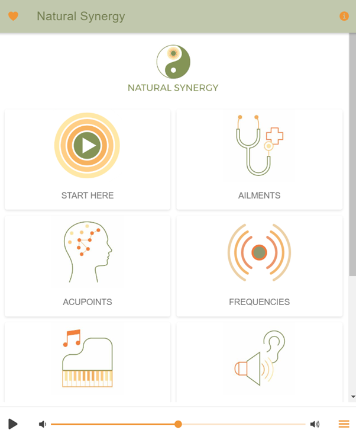
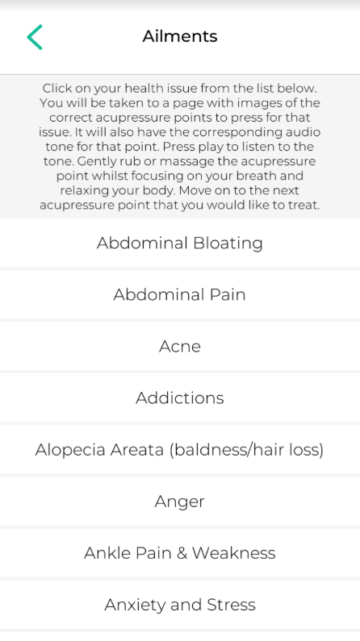
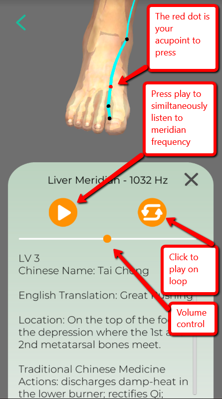
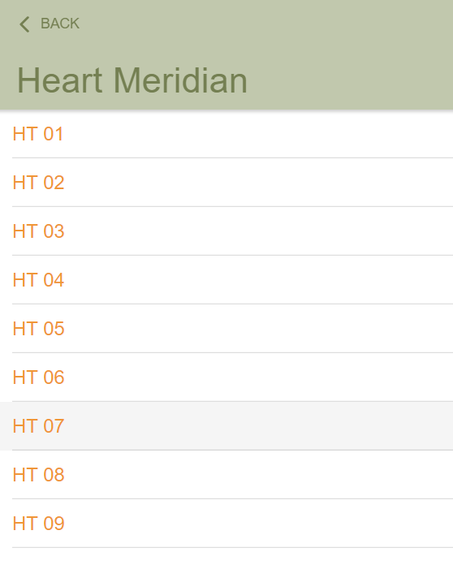
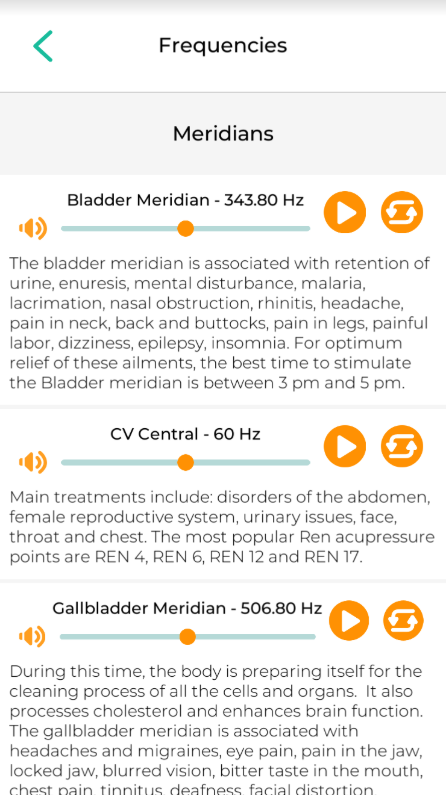
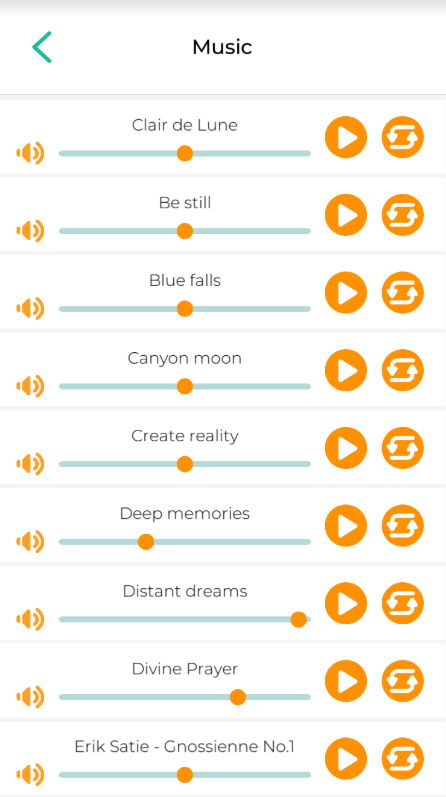
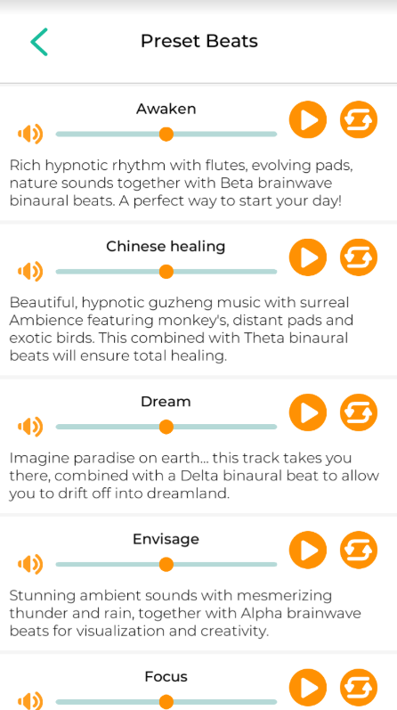
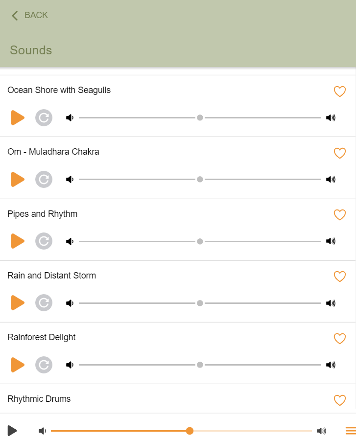
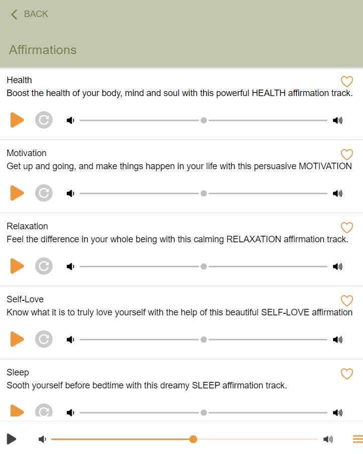

Have you tried out the new Natural Synergy desktop app yet?
(The app comes as a limited-time free bonus with the Natural Synergy system)
Let’s face it, our health is under siege from every direction… environmental pollution, poorly regulated GMO’s, EMF pollution, ultra-processed foods, toxic medications… not to mention, everyday stress that wears the body down.
It’s simply impossible to avoid the plague of modern-day illnesses, let alone the ailments we have inherited – without sound advice and the latest advancements in technology.
Natural Synergy is based on the teachings of Traditional Chinese Medicine (TCM) that demonstrate how to use acu-therapies yourself at home.
There are many types of acu-therapies… the most commonly known is acupuncture. Chinese doctors are widely known for combining acu-therapies to achieve a synergy that yields a faster and longer-lasting result.
Heating acupuncture needles with burning herbs is one popular option (moxibustion) …
Electrified needles are another popular method (electro-acupuncture)…
As you can imagine, these methods sound very uncomfortable. Heck, acupuncture alone is a daunting process enough (did you know the therapist sometimes twists the needles?).
The Natural Synergy app is the only app of its kind that combines two kinds of non-evasive acu-therapies with the same healing synergy as electro-acupuncture.
Acupressure – which is equally effective as acupuncture but you don’t need the needles…
Sound therapy – This is usually performed using specially tuned tuning forks. But since tuning forks need to be constantly struck in order to resonate… digital recordings were created in order to control the duration of the frequency.
Whether you use needles, heat, electricity, finger pressure, or sound frequencies… all can be used to restore a natural circulation of Qi within your body which unleashes a rapid healing response.
The app – which features a host of treatments for over 100 different ailments (the Natural Synergy ebook offers over 250% more content + 3 added bonuses), you can easily find them on the alphabetically ordered dashboard.
And the advanced graphics of our acu-model means you can easily find any acupoint you need for fast relief.
Apart from being professional acu-therapy software, it is easily one of the best sound therapy tools on the market. Especially if you are looking for a huge range of therapeutic frequencies, beautiful sounds of nature, and relaxing meditative tracks.
The best part is that you can totally personalize the tracks – by mixing them together to suit your own needs and tastes.
But to get the most out of this handy app it helps to get a ‘walk-through’ so you can truly appreciate how beneficial it can be.
If you’re not a Natural Synergy member, click here to learn more…
Using the App
Upon opening the app, you’ll find everything you need on the dashboard.
Click on “Start Here”…

The Ailments Tab
To start practicing acu-therapy straight away, click on the Ailments icon, then scroll through an alphabetical list of ailments until you find what you’d like to work on.
This will take you to a screen with a description, image, and tone for that particular acupoint.
Scroll down to read the full description in the info box and click on the close icon (X) when you’re finished.
Click on the play button to play the meridian tone while applying firm finger pressure to the acupressure point.
Adjust the volume by sliding the volume bar up and down. The tone will play for one minute. To extend the duration, simply click on the loop button. Press the stop button when you are done. Then click on the back button and select the next acupoint to work on.


The Acupoints Tab
This is where you can find a list of over 400 acupressure points on the body.
Comprised of 14 different meridian lines that relate to different major organs.
Simply click on an organ and select a link to any acupoint you need.

The Frequencies Tab
The ‘frequencies’ tab is where you find the meridian frequencies should you want to mix one of them with a relaxing sound of nature.
Keep scrolling down and you will find brainwave frequencies that you can also mix with other tracks.
Below brainwave frequencies is ‘Solfeggio frequencies”.
Finally, ‘Universal frequencies’.

The Music Tab
Here you will find a large number of original, beautiful tracks to inspire and assist in the healing process. I’m sure you’ll also enjoy the piano classics: “Clair de Lune”, “Gnossienne No. 1” and “Gymnopédie No.1” because of their calming tempo.

The Preset Beats Tab
These tracks have been digitally mastered with binaural beats to sync your brainwaves to a more preferable mindset. Use these tracks with headphones to focus your mind, help you sleep or to induce a deep level of creativity or relaxation. [Click here to read more about binaural beats]

The Sounds Tab
The creaking of trees as wind whooshes through the branches… birds calling to one another at the end of the day… the gurgle of a brook in a meadow… the scratch of crickets during Summer — these sounds of nature are not only calming but have profound health benefits.

The Affirmations Tab
Here you will find guided meditations that embed powerful affirmations deep into the unconscious.
Choose between a wide range of positive mindsets such as motivation, self-love, wealth, peaceful sleep or stress relief.
When practiced regularly, they embed actionable belief systems that work on auto-pilot.

Practice & Intention
The key to success with this kind of healing is consistency and intention. Make sure to set aside a short time each day to get your body and mind used to a healthy routine so you can begin to heal at a deep level and reverse any damage or illness.
The Natural Synergy App will constantly be making updates – that means more quality tracks, more health benefits, more variety and value!
We hope you enjoy our wonderful app and experience a real shift in your health and happiness.
If you’re not a member of Natural Synergy, but you would like to learn more, check out the link below.
==> Click here to learn more about AcuFrequency
The Natural Synergy app is offered as a free bonus to members of the Natural Synergy System (worth a combined value of $416) for a limited time for only $47!
==> Kill pain & excellerate healing by targeting the problem at its ROOT CAUSE